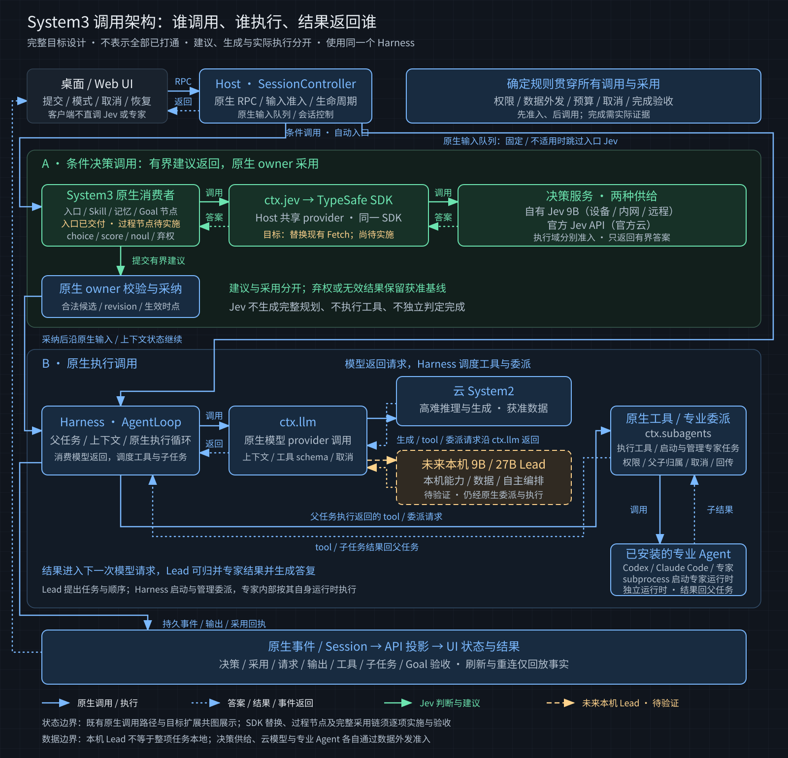

决策成为行动
你看到“已加入核对清单”“先读失败日志”“专家正在检查”。普通选路只占一行，重要改变留下记录。
接得住任务，选得对路径，记得住约束。该专注时安静工作，该调整时给你看清变化，该接管时把控制权放在手边。
离线交互示意 · 所有事件、产物与来源均为编写的样例，不连接后端。选择任务后发送，用“推进下一步”检查体验节奏；播放步数不代表实际耗时；切换示例会重置回放。产品代码仍待设计确认。
选择一个示例，发送后开始回放
你看到“已加入核对清单”“先读失败日志”“专家正在检查”。普通选路只占一行，重要改变留下记录。
约束在任务旁边，点开看到原话。历史整理后能检查保留什么、查回什么，不用相信一枚“无损”徽章。
方案、修改、验证结果逐步出现。停止、继续和下一回合模式可达，状态来自采用与结果回执。
本地通用 9B/27B 可承担 Lead：处理本地事务与数据、组织工作、经 Harness 原生服务指挥专业 Agent。Jev 继续参与有限选路，Harness 统一执行与验收。此能力尚待验证，不在本演示中冒充已经可用。
本地 Lead 的任务结果仍回到同一工作台。需要专业 Agent 或云模型时，明确显示获准外发的材料和实际执行位置；本地指挥不等于所有执行都在本机。
Jev 返回有界建议；云模型或未来本机 Lead 返回生成内容与执行指令；Harness 负责准入、工具调用、专业 Agent 委派和结果归属，再把实际进展呈现到工作台。
